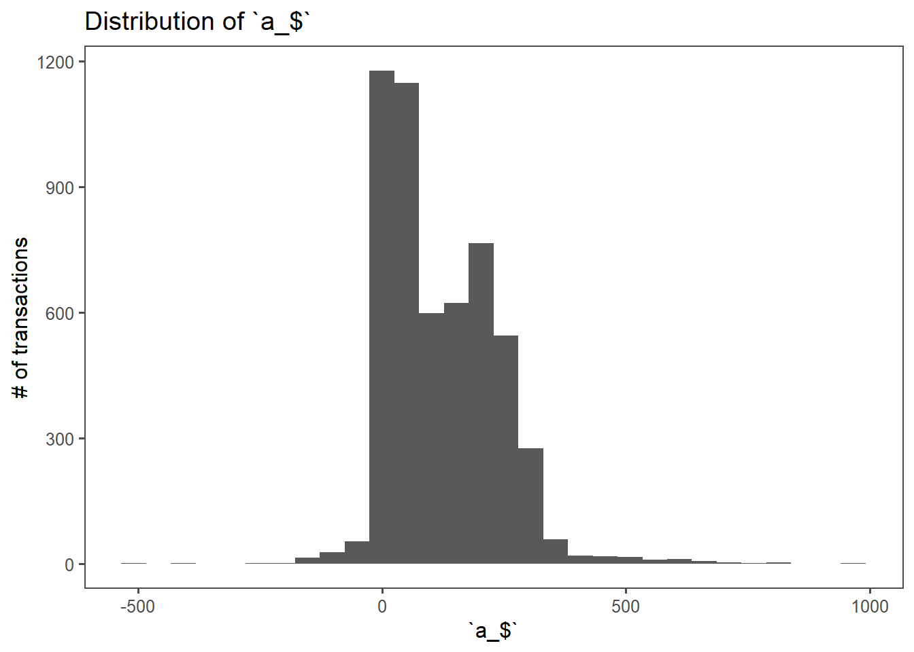
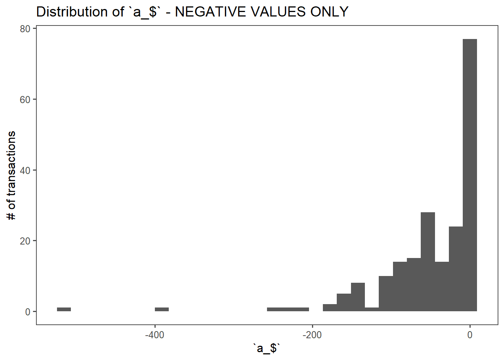
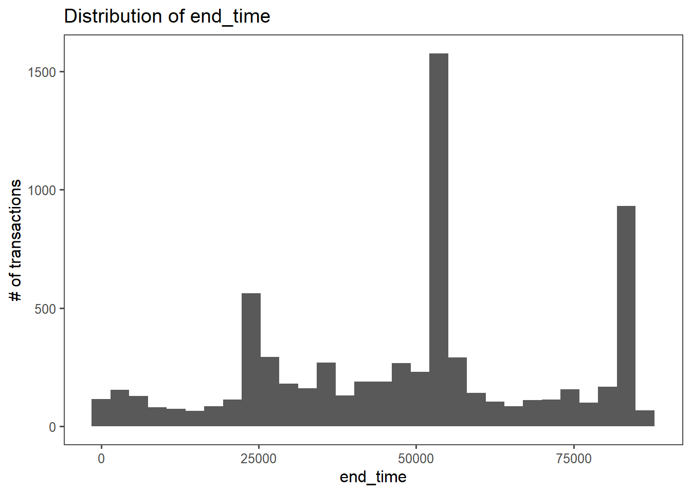

CCI-JLC Exploratory Data Analysis (EDA)
CCI Analytics
2/28/2020
Save Instructions: This file automatically saves any changes made to the current file path. This means that the file must be opened in its current location in order to view or make changes. Moving the file after changes have been made will revert the file back to its original format. Moving the file back to the previous location will restore changes.
Overview
JLC-CCI Analytics Partnership (Roadmap):
Step 1: Initial phone call for JLC overview and analytics needs. Identify opportunities for improvement.
Step 2: Request for information; Obtain datasets which may provide insights into JLC operations/financials.
Step 3: Exploratory Data Analysis (EDA); Understand what the provided data means and how we can use it. <- we are here
Step 4: Visit Rockford Facility to develop in-person knowledge of operations.
Step 5: Identify “low hanging fruit” analyses.
EDA Objective(s):
- Uncover underlying structure of data by analyzing each feature (feature = unique column in dataset)
- Begin to develop an intuition for the data
- Develop follow up questions to grow intuition
- Uncover relevant/impotant features in the dataset; Similarly, uncover irrelevant features so that a focused analysis can be conducted ignoring these variables
- Detect outliers/unusual patterns
Raw Data (Preview)
First 10 Rows
| site_ref | trans_num | job | suffix | trans_type | trans_date_time | trans_date | trans_time | qty_complete | qty_scrapped | oper_num | a_hrs | next_oper | emp_num | a_$ | start_time | end_time | ind_code | pay_rate | qty_moved | whse | loc | user_code | close_job | issue_parent | lot | complete_op | pr_rate | job_rate | shift | posted | low_level | backflush | reason_code | trans_class | ps_num | wc | awaiting_eop | fixovhd | varovhd | cost_code | co_product_mix | NoteExistsFlag | RecordDateTime | RecordDate | RecordTime | RowPointer | CreatedBy | UpdatedBy | CreateDateTime | CreateDate | CreateTime | InWorkflow | import_doc_id | container_num | parent_lot | parent_serial | RESID | Uf_DocumentNum | X |
|---|---|---|---|---|---|---|---|---|---|---|---|---|---|---|---|---|---|---|---|---|---|---|---|---|---|---|---|---|---|---|---|---|---|---|---|---|---|---|---|---|---|---|---|---|---|---|---|---|---|---|---|---|---|---|---|---|---|---|---|
| ROCK | 1376545 | P000622503 | 0 | M | 7/2/2019 3:31 | 7/2/2019 | 03:31:00 | 20400 | 0 | 991 | 0.000 | NULL | 33335 | NULL | NULL | NULL | NULL | NULL | 20400 | MAIN | TRAILER | LTM | 0 | 0 | 1.11123E+14 | 0 | NULL | NULL | 3SH | 1 | 0 | 0 | NULL | J | NULL | PPACK | 0 | 0.00 | 0 | NULL | 0 | 0 | 7/2/2019 3:35 | 7/2/2019 | 03:35:38 | 6FA13797-ABAE-4E88-A2D1-419D3CB40066 | JLCLARKNT-DB1-RK$ | sa | 7/2/2019 3:34 | 7/2/2019 | 03:34:01 | 0 | NULL | NULL | NULL | NULL | NULL | NULL | NA |
| ROCK | 1376546 | 6213567 | 0 | R | 7/1/2019 23:42 | 7/1/2019 | 23:42:00 | 0 | 0 | 50 | 4.317 | NULL | C000083 | 203.02851 | 85320 | 14460 | NULL | R | 0 | MAIN | NULL | LTR | 0 | 0 | NULL | 0 | 47.03 | 47.03 | 3SH | 1 | 0 | 0 | NULL | J | NULL | C8 | 0 | 1705.09 | 0 | NULL | 0 | 0 | 7/2/2019 4:05 | 7/2/2019 | 04:05:40 | 1B9C7C83-2974-417D-8AE2-E7037D8A53E1 | JLCLARKNT-DB1-RK$ | sa | 7/2/2019 4:04 | 7/2/2019 | 04:04:00 | 0 | NULL | NULL | NULL | NULL | NULL | NULL | NA |
| ROCK | 1376547 | 6213567 | 0 | C | 7/1/2019 23:42 | 7/1/2019 | 23:42:00 | 0 | 0 | 50 | 4.317 | NULL | NULL | NULL | 85320 | 14460 | NULL | NULL | 0 | MAIN | NULL | LTC | 0 | 0 | NULL | 0 | NULL | NULL | 3SH | 1 | 0 | 0 | NULL | J | NULL | C8 | 0 | 0.00 | 0 | NULL | 0 | 0 | 7/2/2019 4:05 | 7/2/2019 | 04:05:40 | 1E39945E-64E8-407E-93DC-85D80B2AEED0 | JLCLARKNT-DB1-RK$ | sa | 7/2/2019 4:04 | 7/2/2019 | 04:04:01 | 0 | NULL | NULL | NULL | NULL | NULL | NULL | NA |
| ROCK | 1376548 | 6213560 | 0 | R | 7/1/2019 22:57 | 7/1/2019 | 22:57:00 | 0 | 0 | 40 | 5.150 | NULL | C000053 | 213.725 | 82620 | 14760 | NULL | R | 0 | MAIN | NULL | LTR | 0 | 0 | NULL | 0 | 41.5 | 41.5 | 3SH | 1 | 0 | 0 | NULL | J | NULL | C8 | 0 | 2034.10 | 0 | NULL | 0 | 0 | 7/2/2019 4:10 | 7/2/2019 | 04:10:40 | 4C0FE4BC-D1E1-47C9-B50A-37FB9A7B99BB | jalicea | sa | 7/2/2019 4:07 | 7/2/2019 | 04:07:01 | 0 | NULL | NULL | NULL | NULL | NULL | NULL | NA |
| ROCK | 1376549 | 6213560 | 0 | C | 7/1/2019 22:57 | 7/1/2019 | 22:57:00 | 0 | 0 | 40 | 5.150 | NULL | NULL | NULL | 82620 | 14760 | NULL | NULL | 0 | MAIN | NULL | LTC | 0 | 0 | NULL | 0 | NULL | NULL | 3SH | 1 | 0 | 0 | NULL | J | NULL | C8 | 0 | 0.00 | 0 | NULL | 0 | 0 | 7/2/2019 4:10 | 7/2/2019 | 04:10:40 | 6D42B895-E0A7-4C78-A885-FCD1F0A978BD | JLCLARKNT-DB1-RK$ | sa | 7/2/2019 4:07 | 7/2/2019 | 04:07:01 | 0 | NULL | NULL | NULL | NULL | NULL | NULL | NA |
Summary of Dataset
Feature Architechture:
## 'data.frame': 10000 obs. of 60 variables:
## $ site_ref : chr "ROCK" "ROCK" "ROCK" "ROCK" ...
## $ trans_num : int 1376545 1376546 1376547 1376548 1376549 1376550 1376551 1376552 1376553 1376554 ...
## $ job : chr "P000622503" "6213567" "6213567" "6213560" ...
## $ suffix : chr "0" "0" "0" "0" ...
## $ trans_type : chr "M" "R" "C" "R" ...
## $ trans_date_time: chr "7/2/2019 3:31" "7/1/2019 23:42" "7/1/2019 23:42" "7/1/2019 22:57" ...
## $ trans_date : chr "7/2/2019" "7/1/2019" "7/1/2019" "7/1/2019" ...
## $ trans_time : chr "03:31:00" "23:42:00" "23:42:00" "22:57:00" ...
## $ qty_complete : num 20400 0 0 0 0 ...
## $ qty_scrapped : int 0 0 0 0 0 0 41 0 0 27 ...
## $ oper_num : int 991 50 50 40 40 40 30 50 50 40 ...
## $ a_hrs : num 0 4.32 4.32 5.15 5.15 ...
## $ next_oper : chr "NULL" "NULL" "NULL" "NULL" ...
## $ emp_num : chr "33335" "C000083" "NULL" "C000053" ...
## $ a_$ : chr "NULL" "203.02851" "NULL" "213.725" ...
## $ start_time : chr "NULL" "85320" "85320" "82620" ...
## $ end_time : chr "NULL" "14460" "14460" "14760" ...
## $ ind_code : chr "NULL" "NULL" "NULL" "NULL" ...
## $ pay_rate : chr "NULL" "R" "NULL" "R" ...
## $ qty_moved : num 20400 0 0 0 0 ...
## $ whse : chr "MAIN" "MAIN" "MAIN" "MAIN" ...
## $ loc : chr "TRAILER" "NULL" "NULL" "NULL" ...
## $ user_code : chr "LTM" "LTR" "LTC" "LTR" ...
## $ close_job : int 0 0 0 0 0 0 0 0 0 0 ...
## $ issue_parent : int 0 0 0 0 0 0 0 0 0 0 ...
## $ lot : chr "1.11123E+14" "NULL" "NULL" "NULL" ...
## $ complete_op : int 0 0 0 0 0 0 0 0 0 0 ...
## $ pr_rate : chr "NULL" "47.03" "NULL" "41.5" ...
## $ job_rate : chr "NULL" "47.03" "NULL" "41.5" ...
## $ shift : chr "3SH" "3SH" "3SH" "3SH" ...
## $ posted : int 1 1 1 1 1 1 1 1 1 1 ...
## $ low_level : chr "0" "0" "0" "0" ...
## $ backflush : int 0 0 0 0 0 0 0 0 0 0 ...
## $ reason_code : chr "NULL" "NULL" "NULL" "NULL" ...
## $ trans_class : chr "J" "J" "J" "J" ...
## $ ps_num : chr "NULL" "NULL" "NULL" "NULL" ...
## $ wc : chr "PPACK" "C8" "C8" "C8" ...
## $ awaiting_eop : int 0 0 0 0 0 0 0 0 0 0 ...
## $ fixovhd : num 0 1705 0 2034 0 ...
## $ varovhd : int 0 0 0 0 0 0 0 0 0 0 ...
## $ cost_code : chr "NULL" "NULL" "NULL" "NULL" ...
## $ co_product_mix : chr "0" "0" "0" "0" ...
## $ NoteExistsFlag : int 0 0 0 0 0 0 0 0 0 0 ...
## $ RecordDateTime : chr "7/2/2019 3:35" "7/2/2019 4:05" "7/2/2019 4:05" "7/2/2019 4:10" ...
## $ RecordDate : chr "7/2/2019" "7/2/2019" "7/2/2019" "7/2/2019" ...
## $ RecordTime : chr "03:35:38" "04:05:40" "04:05:40" "04:10:40" ...
## $ RowPointer : chr "6FA13797-ABAE-4E88-A2D1-419D3CB40066" "1B9C7C83-2974-417D-8AE2-E7037D8A53E1" "1E39945E-64E8-407E-93DC-85D80B2AEED0" "4C0FE4BC-D1E1-47C9-B50A-37FB9A7B99BB" ...
## $ CreatedBy : chr "JLCLARKNT\\JLW-DB1-RK$" "JLCLARKNT\\JLW-DB1-RK$" "JLCLARKNT\\JLW-DB1-RK$" "jalicea" ...
## $ UpdatedBy : chr "sa" "sa" "sa" "sa" ...
## $ CreateDateTime : chr "7/2/2019 3:34" "7/2/2019 4:04" "7/2/2019 4:04" "7/2/2019 4:07" ...
## $ CreateDate : chr "7/2/2019" "7/2/2019" "7/2/2019" "7/2/2019" ...
## $ CreateTime : chr "03:34:01" "04:04:00" "04:04:01" "04:07:01" ...
## $ InWorkflow : int 0 0 0 0 0 0 0 0 0 0 ...
## $ import_doc_id : chr "NULL" "NULL" "NULL" "NULL" ...
## $ container_num : chr "NULL" "NULL" "NULL" "NULL" ...
## $ parent_lot : chr "NULL" "NULL" "NULL" "NULL" ...
## $ parent_serial : chr "NULL" "NULL" "NULL" "NULL" ...
## $ RESID : chr "NULL" "NULL" "NULL" "NULL" ...
## $ Uf_DocumentNum : chr "NULL" "NULL" "NULL" "NULL" ...
## $ X : logi NA NA NA NA NA NA ...[Above] Using the function str() (“structure”), we can get a summary of the dataset, which displays all of the variables as well as their data types. A detailed EDA is conducted for each variable in the Detailed EDA section.
Follow-up/Open Items
- Verify Relevant Features with JLC
- Variable Specific Questions [Detailed EDA Section]
- General Data Set Questions
- Determine analysis options with this dataset
General Questions:
What is this dataset currently used for?
What is the current data recording process?
What machine is this data set referring to? Is there a variable in this dataset that indicates machine?
Potential Analysis Opportunities (Initial Ideas):
Note: Will need to asses the feasibility of these analyses based on data availability and integrity.
- Pricing Optimization
- Facility Layout Optimization
- Yield Analysis
- Processing Rate Analysis
- Capacity Planning Model
- Production Scheduling
- Raw Material Analysis (Purchasing)
Detailed EDA - Part 1
Procedure: Analyze each feature (aka column) in the transaction dataset. We are interested in the following:
- Data Type
- Zeros/Infinite Values/NA
- Missing Values
- Basic Trends
- Unique/repeated values
- Understanding each feature’s purpose
Each feature section has an obervations field as well as follow up questions that need to be answered to better our understanding of the data.
Feature 01 | site_ref/ site_ref
## # A tibble: 1 x 2
## site n
## <chr> <int>
## 1 ROCK 10000Observations:
The site feature only contains Rockford (ROCK) entries. This feature is likely meaningless for future analysis, unless transaction data combines multiple locations.
Questions:
Will transaction data sets ever contain multiple locations?
Do the different facilities of JLC have similar operations, or are they completely unique?
Is there a feature in Syteline that distinguishes between departments/line operation? (“job column -> FAB significance”)
JLC variable description:
Feature 02 | trans_num
## # A tibble: 10,000 x 2
## trans_num n
## <fct> <int>
## 1 1376545 1
## 2 1376546 1
## 3 1376547 1
## 4 1376548 1
## 5 1376549 1
## 6 1376550 1
## 7 1376551 1
## 8 1376552 1
## 9 1376553 1
## 10 1376554 1
## # ... with 9,990 more rowsObservations:
It looks like our 2nd feature, trans_num, is unique in each row of the dataset. This means that each row in the dataset likely represents a unique transaction at the Rockford facility.
Questions:
What defines a transaction in the context of this dataset?
How are transactions recorded into the system? Human-inputted?
JLC variable description:
Feature 03 | job
## # A tibble: 616 x 2
## job n
## <fct> <int>
## 1 NULL 2917
## 2 FAB0001772 237
## 3 FAB0001795 116
## 4 6213496 94
## 5 FAB0001940 93
## 6 FAB0001797 84
## 7 FAB0001798 74
## 8 FAB0001777 69
## 9 6213546 62
## 10 FAB0001796 59
## # ... with 606 more rowsObservations:
There are many NULL values in the job feature. There also appears to be a prefix (i.e “FAB”) attached to some jobs.
Questions:
Need clarification on these codified values (i.e “FAB”).
Why is there a significant number of NULL values in this feature?
JLC variable description:
Feature 04 | suffix
## # A tibble: 5 x 2
## suffix n
## <chr> <int>
## 1 0 5883
## 2 NULL 2585
## 3 1 1221
## 4 2 267
## 5 3 44Observations:
The most common suffix is 0, however there are many NULL values as well too. Included values range from 0 - 3. Significance of suffix still unknown.
Questions:
Need clarification on suffix meaning/significance.
Why is there a significant number of NULL values in this feature?
JLC variable description:
Feature 05 | trans_type
## # A tibble: 5 x 2
## trans_type n
## <chr> <int>
## 1 I 2917
## 2 M 2281
## 3 R 2191
## 4 C 2189
## 5 S 422Observations:
trans_type categories are: I, M, R, C, S; trans_type “I” being the most common. Will need more clarification on the meaning of trans_type.
Questions:
Need clarification on trans_type meaning/significance.
JLC variable description:
Feature 06, 07, 08 | trans_date_time, trans_date, trans_time
## # A tibble: 74 x 2
## dat n
## <chr> <int>
## 1 08/14/2019 635
## 2 07/23/2019 626
## 3 08/05/2019 571
## 4 07/02/2019 503
## 5 07/22/2019 493
## 6 08/29/2019 474
## 7 08/22/2019 466
## 8 07/03/2019 422
## 9 10/17/2019 368
## 10 08/13/2019 344
## # ... with 64 more rows
## # A tibble: 5 x 2
## mon n
## <chr> <int>
## 1 Aug 4090
## 2 Jul 2572
## 3 Sep 1967
## 4 Oct 1364
## 5 Jun 7
## # A tibble: 24 x 2
## time n
## <chr> <int>
## 1 07 1369
## 2 00 1289
## 3 15 1006
## 4 23 724
## 5 06 675
## 6 05 455
## 7 16 405
## 8 08 393
## 9 10 386
## 10 13 365
## # ... with 14 more rows
Observations:
The first transaction in the dataset is on 2019-06-25 05:45:00. The last transaction in the dataset is on 2019-10-24 01:17:00 . August has the most “activity” (transactions) out of the 5 months in the dataset. We would need to look at data for the entire year to make any real monthly comparisons.
If interpreted correctly, 7AM is when the most transactions occur. In fact, the hours of the day where the majority of transactions occur is during 7, 15, 23/24 -> these could be shift changes.
There are clear gaps from a time perspective in the data. Weekends could explain some of these gaps, but there is overall a lot of variance in the number of transactions per day.
Note: trans_date was the only column sourced from the ERP system. The format of the data was ‘date time’. We split date and time amnually to create the other 2 trans_ columns.
Questions:
What are some factors that influence transaction frequency per day? Weekends? Equipment Down? Actual Demand?
Why are there frequent gaps in transaction dates (see visual)? How accurate are the transaction dates? Are values scanned as the process flows, or all at the end?
When do shifts start and end?
How do these dates and times relate to RecordDate and CreateDate features?
JLC variable description:
Feature 09 | qty_complete
## # A tibble: 1,675 x 2
## qty_complete n
## <dbl> <int>
## 1 0 6782
## 2 14000 155
## 3 1296 106
## 4 21760 50
## 5 1 48
## 6 15120 43
## 7 18360 43
## 8 20400 37
## 9 1760 35
## 10 60480 33
## # ... with 1,665 more rows## Min. 1st Qu. Median Mean 3rd Qu. Max.
## -172725 0 0 3742 1287 662240

Observations:
The majority of transactions have 0 values for qty_complete. There are repeated values, but also large amount of unique values. There are negative values present. Feature meaning still unclear.
Questions:
Need further clarification.
Do certain transactions produce certain qty_complete values?
What is the unit of measurement for qty_complete?
Are qty_complete values given only to transactions that complete a “job”?
What does a negative qty_complete value mean?
JLC variable description:
Feature 10 | qty_scrapped
## # A tibble: 326 x 2
## qty_scrapped n
## <int> <int>
## 1 0 8438
## 2 1 79
## 3 2 71
## 4 100 64
## 5 50 52
## 6 200 49
## 7 3 42
## 8 10 37
## 9 20 36
## 10 4 31
## # ... with 316 more rows## Min. 1st Qu. Median Mean 3rd Qu. Max.
## -1000.00 0.00 0.00 37.87 0.00 165728.00

Observations:
Most observations in the dataset have a qty_scrapped value of 0. There are a high frequency of certain scrap values as well. Will need further clarification behind the meaning of negative qty_scrap transactions compared to positive qty_scrap transactions.
Questions:
Need further clarification. Why are there negative AND positive scrap values?
What are the units of measurement?
JLC variable description:
Feature 11 | oper_num
## # A tibble: 14 x 2
## oper_num n
## <int> <int>
## 1 0 2917
## 2 20 2525
## 3 10 869
## 4 991 840
## 5 30 812
## 6 40 632
## 7 60 574
## 8 50 524
## 9 70 237
## 10 80 44
## 11 90 17
## 12 120 6
## 13 110 2
## 14 100 1
Observations:
This is a lot of different oper_num’s - assuming that each one represents a different operator. There is also a possibility that oper_num has to do with a specific operation, as opposed to a human operator - but this will require further follow-up to determine. 0 is the most common oper_num. Excluding 0, the most common oper_num is 20.
Questions:
Need further clarification.
What is the significance of oper_num 991? Other numbers are multiples of 10.
JLC variable description:
Feature 12 | a_hrs
## # A tibble: 699 x 2
## a_hrs n
## <dbl> <int>
## 1 0 2345
## 2 0.017 153
## 3 0.2 124
## 4 8 78
## 5 0.3 76
## 6 8.05 73
## 7 8.03 72
## 8 0.1 66
## 9 -0.2 62
## 10 8.07 58
## # ... with 689 more rows## Min. 1st Qu. Median Mean 3rd Qu. Max.
## -23.900 0.000 1.083 2.831 6.071 23.983
Observations:
The most common a_hrs values are equal to 0. Values are repreated, but there are a large number of unique entries. The bounds of this feature are -24, +24, which leads us to believe that this feature is representative of time in some form.
Questions:
Need further clarification.
Why are there negative a_hrs?
Is a_hrs a time feature?
What does the formatting of this feature represent?
JLC variable description:
Feature 13 | next_oper
## # A tibble: 14 x 2
## next_oper n
## <chr> <int>
## 1 NULL 7109
## 2 991 1481
## 3 30 327
## 4 20 264
## 5 40 258
## 6 50 220
## 7 60 188
## 8 70 103
## 9 80 24
## 10 100 9
## 11 90 8
## 12 130 6
## 13 120 2
## 14 110 1
## oper_num next_oper diff
## 1 991 NULL NA
## 2 50 NULL NA
## 3 50 NULL NA
## 4 40 NULL NA
## 5 40 NULL NA
## 6 40 NULL NA
## 7 30 40 10
## 8 50 NULL NA
## 9 50 NULL NA
## 10 40 50 10Observations:
Most of the transactions in the dataset have a value of NULL for next_oper, second being 991, and there are many transactions with other values. Similar, if not identical categories to oper_num except for 0. next_oper appears to be the action immediately following oper_num. 991 could be the final state of operation (confirmation needed).
Questions:
Confirm the relationship between oper_num and next_oper. Are oper_num and next_oper people or actions?
Does 991 signify the end of something?
What about NULL?
JLC variable description:
Feature 14 | emp_num
## # A tibble: 236 x 2
## emp_num n
## <chr> <int>
## 1 NULL 2528
## 2 26511 324
## 3 10396 202
## 4 33303 181
## 5 33383 172
## 6 C000083 172
## 7 16783 169
## 8 C000082 162
## 9 C000051 158
## 10 C000081 150
## # ... with 226 more rows
Observations:
The emp_num feature has lots of NULL values, some type of numerical coding systems, as well as prefixes (i.e “C”) attached to it’s numerics.
Questions:
Further clarification needed.
What is the significance of the coded values?
Whay are there a large amount of NULL values?
JLC variable description:
Feature 15 | a_$
## # A tibble: 3,109 x 2
## `a_$` n
## <dbl> <int>
## 1 NA 4131
## 2 0 486
## 3 4.61 41
## 4 -5.41 32
## 5 0.391 29
## 6 -5.26 23
## 7 3.83 17
## 8 129. 13
## 9 217. 12
## 10 -46.1 11
## # ... with 3,099 more rows## Min. 1st Qu. Median Mean 3rd Qu. Max. NA's
## -519.09 16.61 77.60 111.52 206.92 956.07 4131
Observations:
The most common a_\(* is NULL. The next most common is 0.0000000. There are some repeating *a_\); however it seems like this feature is rather unique per observation. Negative values present.
Questions:
Further clarification needed.
Is this some type of costing measure? If so, need more context.
Why are there a large amount of NULL? If this is indeed a costing feature, NULL are problematic.
What is the significance of the negative values?
JLC variable description:
Feature 16 | start_time
## # A tibble: 1,180 x 2
## start_time n
## <chr> <int>
## 1 NULL 2885
## 2 25500 86
## 3 25560 80
## 4 82620 69
## 5 25200 68
## 6 54300 67
## 7 82560 65
## 8 24960 61
## 9 53940 61
## 10 25080 60
## # ... with 1,170 more rows
Observations:
The most common value for start time is NULL. The histogram shows an interesting pattern that is trimodal in nature (3 high frequency peaks). This pattern is strikingly similar to feature 8 trans_time. There could be some relationship between the 2 variables.
Questions:
How does start_time relate to end_time?
How does start_time relate to trans_time?
What do the values represent? Should they be formatted HH:MM:SS?
JLC variable description:
Feature 17 | end_time
## # A tibble: 1,179 x 2
## end_time n
## <chr> <int>
## 1 NULL 2885
## 2 53700 185
## 3 53760 168
## 4 53880 154
## 5 53820 148
## 6 54000 129
## 7 53640 125
## 8 53940 121
## 9 82500 108
## 10 25200 95
## # ... with 1,169 more rows
Observations:
The most common value for end time is NULL. Again, the trimodal pattern emerges, similar to start_time, at relatively similar values.
Questions:
What is the relationship between start_time and end_time?
What does the formatting represent?
JLC variable description:
Feature 18 | ind_code
## # A tibble: 25 x 2
## ind_code n
## <chr> <int>
## 1 NULL 7083
## 2 1 802
## 3 4 455
## 4 5 229
## 5 177 205
## 6 16 181
## 7 38 151
## 8 169 112
## 9 2 108
## 10 28 94
## # ... with 15 more rows
Observations:
The most common ind_code is NULL, meaning not all transactions have ind_codes. After excluding NULL values of ind_code, 1 is the most commonly used ind_code. This feature appears to be of factor type. All numerical values except for QC/qc.
Questions:
Will need to follow up on exactly what ind_codes means (indicator?).
What does QC/qc represent? Quality Control?
JLC variable description:
Feature 19 | pay_rate
## # A tibble: 2 x 2
## pay_rate n
## <chr> <int>
## 1 R 5531
## 2 NULL 4469Observations:
This feature appears to have no explanatory variable. There are only 2 levels to the pay_rate feature, and one of those levels is NULL. Recommend ignoring or deleting this feature from the dataset as it likely provides no explanatory power for any other feature.
Questions:
Pay rate for operators or for customers?
What does “R” mean? Regular? What about NULL?
Could there be more values (other than R) if we expanded the dataset?
JLC variable description:
Feature 20 | qty_moved
## # A tibble: 1,675 x 2
## qty_moved n
## <dbl> <int>
## 1 0 6783
## 2 14000 155
## 3 1296 106
## 4 21760 50
## 5 1 48
## 6 15120 43
## 7 18360 43
## 8 20400 37
## 9 1760 35
## 10 60480 33
## # ... with 1,665 more rows## Min. 1st Qu. Median Mean 3rd Qu. Max.
## -172725 0 0 3741 1284 662240


Observations:
The qty_moved feature does not have NULL values, but rather has 0 values. This is by far the most common value. There also appears to be some negative values in the qty_moved feature.
Questions:
Further clarification needed on qty_moved.
Why are there negative values?
Quantity moved where?
Units of measurement?
JLC variable description:
Feature 21 | whse
## # A tibble: 2 x 2
## whse n
## <chr> <int>
## 1 MAIN 6951
## 2 NULL 3049Observations:
This feature can likely be deleted. The whse feature only has 2 levels, one of which is NULL. Most of the whse value = “MAIN”. (Main warehouse?)
Questions:
Further clarification needed. What does whse mean? (Warehouse?)
Are there other warehouses at JLC?
JLC variable description:
Feature 22 | loc
## # A tibble: 17 x 2
## loc n
## <chr> <int>
## 1 NULL 8250
## 2 STL-11 611
## 3 FABFG 488
## 4 TRAILER 325
## 5 NORTH 138
## 6 PLAST 83
## 7 STOCK 27
## 8 SOUTH 25
## 9 TS 24
## 10 2ABAY-01 17
## 11 FAB 4
## 12 trailer 3
## 13 2AA-20 1
## 14 2ABAY-04 1
## 15 KC 1
## 16 STl-11 1
## 17 Trailer 1
Observations:
Most transactions have a loc = NULL, however some transactions do have values for LOC. Most common STL-11. loc could be indicate department of transaction, but need confirmation. STL-11 is the most common loc.
Questions:
Further clarification needed.
Could this be department locations?
Similar entires that are slightly different? (i.e. TRAILER vs Trailer vs. trailer)
JLC variable description:
Feature 23 | user_code
## # A tibble: 10 x 2
## user_code n
## <chr> <int>
## 1 LTI 2585
## 2 LTC 2189
## 3 LTM 1904
## 4 LTR 1624
## 5 JG 593
## 6 LTS 417
## 7 LTJ 402
## 8 DS 235
## 9 AG 44
## 10 PSL 7
Observations:
Most user_code values are “LTI”. There are no NULL values for any transactions for the user_code feature, which makes one believe it is likely an important feature.
4 of the user_code values are used considerably more than any other (LTR, LTM, LTI, LTC).
Questions:
Will need to follow up on meaning behind the user_code feature. Need code descriptions.
JLC variable description:
Feature 24 | close_job
## # A tibble: 1 x 2
## close_job n
## <int> <int>
## 1 0 10000Observations:
The close_job feature has only 0 values. For this reason, we will likely want to delete or completely ignore this feature for any analysis.
Questions:
Is this input currently utilized correctly?
If updated with required values, would there be more insight gained?
JLC variable description:
Feature 25 | issue_parent
## # A tibble: 2 x 2
## issue_parent n
## <int> <int>
## 1 0 9894
## 2 1 106Observations:
Most values for lot are equal to 0, however there are some lot values equal to 1. In general, only about 1% of transactions in this dataset have a lot value = 1.
Questions:
Valuable explanatory variable with only 1% of lot values non-zero?
What is the significance of the 1 numerical?
Further clarification needed.
JLC variable description:
Feature 26 | lot
## # A tibble: 2 x 2
## lot n
## <chr> <int>
## 1 NULL 8536
## 2 1.11123E+14 1464Observations:
Most values for lot are equal to NULL, however there are some lot values equal to 1.11123E+14 (these are the only 2 levels). Likely not a very useful feature.
Questions:
What is the significance of the 1.11123E+14 numerical?
Further clarification needed.
JLC variable description:
Feature 27 | complete_op
## # A tibble: 2 x 2
## complete_op n
## <int> <int>
## 1 0 9989
## 2 1 11Observations:
Most complete_op values = 0, however 11 out of the total 10,000 transactions have a value = 1.
Questions:
Need more clarification.
Likely an irrelevant variable with only 11 observations differntiating from 0.
JLC variable description:
Feature 28 | pr_rate
## # A tibble: 47 x 2
## pr_rate n
## <chr> <int>
## 1 NULL 4470
## 2 23.267 454
## 3 19.209 441
## 4 41.5 385
## 5 47.03 324
## 6 19.161 259
## 7 26.28 256
## 8 23.027 247
## 9 79.08 246
## 10 79.58 214
## # ... with 37 more rows
Observations:
Most transactions have a NULL value for pr_rate. However, there are many instances of non-nULL values for pr_rate. Values range from 0 to 100, with the distribution concentrated around 25. Seemingly a costing feature of some kind, we should consider how this feature is derived and how it relates to other features.
Questions:
Will need to follow up on the meaning of the pr_rate feature.
Identical to job_rate feature?
JLC variable description:
Feature 29 | job_rate
## # A tibble: 46 x 2
## job_rate n
## <chr> <int>
## 1 NULL 4470
## 2 19.161 669
## 3 23.027 555
## 4 41.5 385
## 5 27.056 347
## 6 47.03 324
## 7 17.174 254
## 8 79.08 245
## 9 79.58 214
## 10 31.507 209
## # ... with 36 more rows
## pr_rate job_rate diff
## 1 NULL NULL NA
## 2 47.03 47.03 0
## 3 NULL NULL NA
## 4 41.5 41.5 0
## 5 NULL NULL NA
## 6 80.4 80.4 0
## 7 NULL NULL NA
## 8 47.03 47.03 0
## 9 NULL NULL NA
## 10 NULL NULL NA## [1] "0.85 rate match"Observations:
The job_rate feature contains 46 unique values, including NULL values and values = 0. For 85% of our transactions - job_rate is equal to pr_rate, with only slight discrepancies when they do occur..
Questions:
Will need to follow up on the meaning of the job_rate feature and it’s relation to pr_rate.
JLC variable description:
Feature 30 | shift
## # A tibble: 4 x 2
## shift n
## <chr> <int>
## 1 1SH 4858
## 2 2SH 3290
## 3 3SH 1513
## 4 NULL 339
Observations
There are some NULL values within the shift feature, however most transactions do have non-NULL values.
“1SH” is the most common value for shift. “2SH” and “3SH” are the only other categories.
Questions:
Could there be more than 3 shifts? (Say, Weekend?)
What do the nullified values represent in terms of a shift?
What are the time frames of each shift?
Why does 1st shift have the most transactions? Does JLC run around the clock?
JLC variable description:
Feature 31 | posted
## # A tibble: 1 x 2
## posted n
## <int> <int>
## 1 1 10000Observations:
All transactions have posted = 1. Consider deleting or ignorning this variable unless additional context is given.
Questions:
Verify relevancy Is this feature currently utilized? If so, what does posted represent?
JLC variable description:
Feature 32 | low_level
## # A tibble: 4 x 2
## low_level n
## <chr> <int>
## 1 0 6064
## 2 NULL 2585
## 3 1 1302
## 4 2 49
Observations:
low_level has some NULL values, but also appears to be a factor feature. The most common value for low_level is 0.
Questions:
Verify Relevancy and utilization.
JLC variable description:
Feature 33 | backflush
## # A tibble: 1 x 2
## backflush n
## <int> <int>
## 1 0 10000Observations:
All transactions have backflush = 0. Consider deleting or ignorning this variable unless additional context is given.
Questions:
Verify Relevancy and utilization.
JLC variable description:
Feature 34 | reason_code
## # A tibble: 62 x 2
## reason_code n
## <chr> <int>
## 1 NULL 8439
## 2 P11 285
## 3 130 176
## 4 131 173
## 5 F01 149
## 6 109 138
## 7 306 67
## 8 F03 52
## 9 P02 50
## 10 96 48
## # ... with 52 more rows
Observations:
There are 60+ different unique reason_code values, including NULL. The most common value for reason_code is NULL, with P11 being the 2nd most common value. There appears to be a prefix attached to some of the reason_code values.
Questions:
What does reason_code signify?
What do the prefixs indicate?
Further clarification needed.
JLC variable description:
Feature 35 | trans_class
## # A tibble: 1 x 2
## trans_class n
## <chr> <int>
## 1 J 10000Observations:
All transactions have trans_value = J. Consider deleting or ignorning this variable unless additional context is given.
Questions:
Verify relevancy, what does “J” represent?
JLC variable description:
Feature 36 | ps_num
## # A tibble: 1 x 2
## ps_num n
## <chr> <int>
## 1 NULL 10000Observations:
All transactions have ps_num = NULL. Consider deleting or ignorning this variable unless additional context is given.
Questions:
Verify Relevancy and utilization.
JLC variable description:
Feature 37 | wc
## # A tibble: 114 x 2
## wc n
## <chr> <int>
## 1 NULL 2927
## 2 STRAP 916
## 3 C8 424
## 4 C5 401
## 5 PPACK 345
## 6 C5A 338
## 7 MPACK 337
## 8 C8A 299
## 9 WAX 285
## 10 P10A1 236
## # ... with 104 more rows
Observations:
The most common value for wc is NULL. The 2nd most common value of wc = STRAP. There are 114 unique values for the wc feature, including NULL values.
Questions:
Need further clarification/description.
What does wc stand for? Some material type?
JLC variable description:
Feature 38 | awaiting_eop
## # A tibble: 1 x 2
## awaiting_eop n
## <int> <int>
## 1 0 10000Observations:
Every transaction has a awaiting_eop value = 0. Consider deleting or ignorning this variable unless additional context is given.
Questions:
Verify Relevancy and utilization.
JLC variable description:
Feature 39 | fixovhd
## # A tibble: 1,863 x 2
## fixovhd n
## <dbl> <int>
## 1 0 7059
## 2 0.28 28
## 3 0.8 25
## 4 3.3 25
## 5 3.43 18
## 6 -49.5 11
## 7 -33.0 11
## 8 750. 11
## 9 0.66 10
## 10 4.95 10
## # ... with 1,853 more rows## Min. 1st Qu. Median Mean 3rd Qu. Max.
## -4816.33 0.00 0.00 130.69 8.26 7351.37


Observations:
Most common fixovhd value = 0. Other fixovhd values are fairly unique, but they do repeat. There are also negative fixovhd values.
Questions:
Need further clarification.
Why are there variables with both positive and negative values?
JLC variable description:
Feature 40 | varovhd
## # A tibble: 1 x 2
## varovhd n
## <int> <int>
## 1 0 10000Observations:
All transaction have a value of varovhd = 0. Seemingly irrelevant, but curious how this may relate (as a feature) to fixovhd.
Questions:
Verify relevancy.
Does varovhd relate to fixovhd in any sense? There is no evidence to suggest this other than similar names.
JLC variable description:
Feature 41 | cost_code
## # A tibble: 2 x 2
## cost_code n
## <chr> <int>
## 1 NULL 9997
## 2 SHP 3Observations:
Most cost_code values are equal to NULL. There are a 3 transactions with cost_code = SHP.
Questions: Verify relevancy.
Underutilized variable?
What does “SHP” stand for?
JLC variable description:
Feature 42 | co_product_mix
## # A tibble: 2 x 2
## co_product_mix n
## <chr> <int>
## 1 0 7415
## 2 NULL 2585Observations:
The co_product_mix feature only takes on 2 values: 0 or NULL. 0 is more common in the transactions, however it is unclear if there is any difference between a 0 value and a NULL value.
Questions:
IS there a difference between 0 and NULL values?
Take as binary values (0 = 1, NULL = 0)?
Need further clarification.
JLC variable description:
Feature 43 | NoteExistsFlag
## # A tibble: 1 x 2
## NoteExistsFlag n
## <int> <int>
## 1 0 10000Observations:
All transactions have recordate NoteExistsFlag* = 0. Suspect this is a flag that indicates if a comment has been made for this transaction. Apparently underutilized feature. Consider deleting or ignorning this variable unless additional context is given.
Questions:
Verify Relevancy and utilization.
JLC variable description:
Feature 44, 45, 46 | RecordDateTime, RecordDate, RecordTime
## # A tibble: 45 x 2
## dat n
## <chr> <int>
## 1 08/14/2019 643
## 2 07/23/2019 642
## 3 08/05/2019 577
## 4 07/22/2019 497
## 5 07/02/2019 493
## 6 08/29/2019 472
## 7 07/03/2019 468
## 8 08/22/2019 422
## 9 08/15/2019 413
## 10 10/17/2019 359
## # ... with 35 more rows
## # A tibble: 4 x 2
## mon n
## <chr> <int>
## 1 Aug 4091
## 2 Jul 2574
## 3 Sep 1971
## 4 Oct 1364
## # A tibble: 24 x 2
## time n
## <chr> <int>
## 1 15 1808
## 2 07 1160
## 3 23 1131
## 4 13 511
## 5 08 476
## 6 10 462
## 7 09 437
## 8 12 417
## 9 16 392
## 10 14 382
## # ... with 14 more rows
Observations:
RecordDate and RecordTime display similar patterns to trans_date and trans_time, but not exactly identical. Explore relationship further.
Questions:
Investigate time feature variables and how they relate to one another within the scope of each transaction.
JLC variable description:
Feature 47 | RowPointer
## # A tibble: 10,000 x 2
## RowPointer n
## <chr> <int>
## 1 0003BFD0-8797-4DA9-A964-2141D6308062 1
## 2 001660D7-8BA7-41D5-9D4A-61F01C6E3FEC 1
## 3 00169E53-54C5-4E10-B06B-D315786D1174 1
## 4 00172EAD-26A3-4400-BBDD-735C7EA06F8A 1
## 5 0017FE4E-D4FA-48C7-8274-1F784460A140 1
## 6 001A47BF-7F63-408D-87AA-8BC7E8E222A3 1
## 7 001CFD83-9F2B-41D6-B631-1E6963191F29 1
## 8 0028445C-E605-4E1B-9C9D-3396C19F4B5E 1
## 9 00372762-CB29-473F-8DF4-EFBA3F4B3560 1
## 10 00427E26-0AA4-4752-904A-0A4F4462A29C 1
## # ... with 9,990 more rowsObservations:
The RowPointer feature has no discernable pattern other than dash marks (" - ") placed at regular intervals throughout each value. A unique identifier of some sort.
Questions:
Would splitting these strings up (possibly at the “-”) create some features with meaning? The only bit of consistency comes from the number of places between each “-” mark.
Further clarification needed.
JLC variable description:
Feature 48 | CreatedBy
## # A tibble: 94 x 2
## CreatedBy n
## <chr> <int>
## 1 "JLCLARKNT\\JLW-DB1-RK$" 6056
## 2 sa 1037
## 3 jgraham 644
## 4 $service 490
## 5 dsiebold 247
## 6 InforWM 153
## 7 pjohnson 132
## 8 agantz 116
## 9 bsheets 62
## 10 fjohnson 59
## # ... with 84 more rows
Obeservations:
It appears that createdBy logs users in some fashion. A JLCLARK “user” is the most common type.
Questions:
Does this feature log user information? If so, by what criteria?
Need furhter clarification.
JLC variable description:
Feature 49 | UpdatedBy
## # A tibble: 5 x 2
## UpdatedBy n
## <chr> <int>
## 1 sa 8557
## 2 jgraham 1002
## 3 dsiebold 340
## 4 agantz 91
## 5 plindstrom 10
Observations:
It appears that CreatedBy and UpdatedBy are related in some fashion, having similar factor levels. In fact, UpdatedBy levels all occur in CreatedBy, however there are much fewer here. “sa” is the most frequent “user”.
Questions:
How does CreatedBy relate to UpdatedBy?
How are “users” tracked?
Need further clarification.
JLC variable description:
Feature 50, 51, 52 | CreateDateTime, CreateDate, CreateTime
## # A tibble: 45 x 2
## dat n
## <chr> <int>
## 1 07/23/2019 644
## 2 08/14/2019 643
## 3 08/05/2019 577
## 4 07/22/2019 497
## 5 07/02/2019 493
## 6 08/29/2019 470
## 7 07/03/2019 468
## 8 08/22/2019 423
## 9 08/15/2019 413
## 10 10/17/2019 359
## # ... with 35 more rows
## # A tibble: 4 x 2
## mon n
## <chr> <int>
## 1 Aug 4091
## 2 Jul 2574
## 3 Sep 1971
## 4 Oct 1364
## # A tibble: 24 x 2
## time n
## <chr> <int>
## 1 15 1805
## 2 07 1157
## 3 23 1128
## 4 13 515
## 5 08 499
## 6 10 472
## 7 09 416
## 8 12 404
## 9 16 394
## 10 14 389
## # ... with 14 more rows
Observations:
CreateDate and CreateTime display similar patterns to trans_date/RecordDate and trans_time.RecordTime, but not exactly identical. Explore relationship further.
Questions:
Investigate time feature variables and how they relate to one another within the scope of each transaction.
JLC variable description:
Feature 53 | InWorkflow
## # A tibble: 1 x 2
## InWorkflow n
## <int> <int>
## 1 0 10000Observations:
Every transaction has an InWorkFlow = 0. Could be something to do with currently operating transaction, meaning that if the transaction was currently taking place, there may be a 1 indicator (assumption). If this is the case, all historical data will have InWorkFlow value = 0 and as such is not meaningful for analysis. Consider ignoring.
Questions:
Verify Relevancy and utilization.
JLC variable description:
Features 54 - 59
## # A tibble: 1 x 2
## import_doc_id n
## <chr> <int>
## 1 NULL 10000## # A tibble: 1 x 2
## container_num n
## <chr> <int>
## 1 NULL 10000## # A tibble: 1 x 2
## parent_lot n
## <chr> <int>
## 1 NULL 10000## # A tibble: 1 x 2
## parent_serial n
## <chr> <int>
## 1 NULL 10000## # A tibble: 1 x 2
## RESID n
## <chr> <int>
## 1 NULL 10000## # A tibble: 1 x 2
## Uf_DocumentNum n
## <chr> <int>
## 1 NULL 10000Observations:
All values for the features: import_doc_id, container_num, parent_lot, parent_serial, RESID, Uf_DocumentNum are equal to NULL. Likely irrelevant variables.
Questions:
Verify Relevancy and utilization.
JLC variable description:
Detailed EDA - Part 2
to be completed
Detailed EDA - Part 3
to be completed